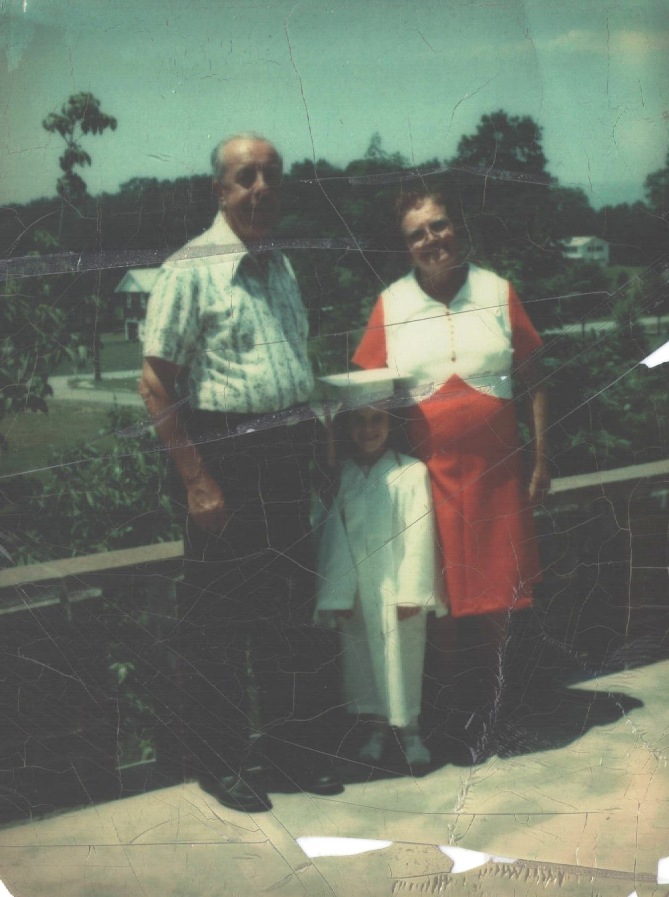

I have been working in aging for almost 20 years. Well, technically, it is longer than that as I started working in aging when I was 11. I was a volunteer for a community friendly visitor program in which I visited community elders at least once a week for companionship, light chores, etc.

Here is my certificate – I am still so proud of it!

That's me in the middle
I always knew I would be working with elders. My undergraduate degree is in Psychology with minors in Gerontology and Biology. My Masters Degree is in Gerontology.
People ask me, “What got you interested in this field?” I think it is because I grew up with my grandparents living with us. Aging was always a normal part of life to me.
People ask me, “What got you interested in this field?” I think it is because I grew up with my grandparents living with us. Aging was always a normal part of life to me.
My passion in aging is changing the culture of aging. Aging is living. Yet, it is often seen as something else- as negative and somewhat useless. We are scared of aging in our society and thus we ignore it. The reality is that we are all aging and we have to find a better way of coping with this!
I am a proponent of “positive gerontology”. Just like the field of psychology has evolved to recognize the importance of focusing on individuals’ strengths rather than weaknesses, the field of gerontology also must go in that direction. Certainly as we age there are challenges we experience that impact how we are living. For some these challenges are quite significant, like for individuals living with dementia. But there are also opportunities and gifts in aging. When we focus more on the things that are important to us, including our strengths, and obtain supports to fortify our weaknesses, we can live meaningfully for all our years.
I am interested in changing the way we care for each other as we age. If and when we do need help as we age, there is no reason why people who need services and supports to live their lives cannot continue to live their lives well. We need to structure the way we care for elders around them, rather than fit elders into the “system”. And I can help you with this. My consulting work is based on person-centered values of choice, dignity, respect, and purposeful living.
Focus on Persons with Dementia
There are over 5 million persons with dementia in the United States. Consistent with a person-centered approach, my work is heavily focused on helping individuals and organizations to understand dementia and ensure that persons with dementia continue to live with meaning and purpose. My work includes gathering information on what people living with dementia need educating persons with dementia as well as people who are caring for persons with dementia, building programs for persons with dementia to fulfill their needs, and advocating for changes that support person-centered dementia care.
Focus on Long-Term Care and Culture Change
Working in nursing homes and assisted living communities, I quickly became frustrated with a traditional system based on institutional values that do not adequately consider the individual and unique needs of each elder, dis empower individuals caring for elders, create environments of ill-being, and disregard the importance of meaningful living. Fortunately, the culture change movement has shown us that it does not have to be this way. For the past 10 years I have worked in the culture change movement to change the way we care for elders in long-term care (and beyond).
“Culture change in long-term care is a longitudinal, systemic, holistic process of transforming a long-term care organization (people, culture, beliefs, actions) and its physical surroundings, from being embedded in a traditional institutional medical model or philosophy to operating as a holistic therapeutic community based upon resident-centered care and dignified workplace practices. Culture change is a multitude of efforts aimed at transforming the psycho-social, organizational, operational and physical environment in order to enhance quality of care, quality of experience, quality of life and create a viable sustainable business through developing a triadic setting that is simultaneously a healthy, positive, enjoyable workplace, a loving, supportive home and a thriving community that meets resident-identified physical, social, emotional, and spiritual needs as well as facilitating a high quality of life for all individuals involved.”My work includes creating change in long-term care. This is an ongoing journey that involves evaluating all aspects of an organizational culture, gathering information and input, building teams, trying new things, and honoring the voices of elders and those working closest with them. My work in culture change also extends to outside individual homes, in which I offer research, education, and programs to advocate for change in long-term care.
My Passion, Training, Experience, and Skills Serving You
I have served elders and their families in hospitals, nursing homes, assisted living communities, and community-based supports. I have worked in the policy arena, in which I tracked and analyzed legislative and regulatory policy for long-term care and other services affecting elders. My research involvement has been in program evaluation, qualitative studies using surveys and focus groups, and quasi-experimental designs. I have provided community and professional education to thousands of individuals, including nurse aides, nurses, social workers, recreation therapists, administrators, other professionals in aging and healthcare, persons with dementia, elders and their families.
As you can see, I have the passion and purpose. But I also back it up with the skills to make things happen. As a consultant, I bring my years of gerontological expertise and experience in policy, research, practice, and education to help organizations actualize their unique goals in supporting elders. I happen to have a diverse array of skills, which I have been told is an asset! I am the person who can write a grant proposal for a proposal idea, develop the program, train the people running the program, manage the program, and evaluate the program. I am the person who can objectively assess your program or organization to determine if it is person-centered and make recommendations on what you can do to become more person-centered. Why is this important? Because building and operating programs that support elders in a person-centered way is THE WAY. This is what elders want. This is what you and I want for ourselves as we age.
My Resume